I Am Sitting in a Remix
Destruction of a groundbreaking electroacoustic masterpiece
Forming interesting textures from excerpts of a piece with the same goal in mind 40 years ago. In 1969, Alvin Lucier released "I Am Sitting in a Room" to the critical acclaim of the electroacoustic community. He offered listeners a direct example of resonant frequencies by looping his voice in a single room, which quickly turned into a beautiful wash of reverberation.
I chose to take his famous phrase and chop it up into 20 segments. I took 5 excerpts of the repeat of this phrase, and used these as the foundation for my composition. From there, I sent these pieces through effect chains that tore the sounds apart, piece by piece. Throughout the piece, I slowly build these parameters, until the very end where I unveil his famous phrase in its original form.
On the technical side, I blend a patch in Pure Data with control data from TouchOSC on an iPad. I was able to trigger different parts of his phrase quickly, along with the same parts played in reverse. On top of this is a pre-composed change of the parameters and parameter sweeps that I trigger sounds under. I also have the ability (utilizing the iPad's accelerometer) to speed up and slow down a circling pattern in an 8-channel surround sound environment. Unfortunately, the sound clip below only has around 30 seconds of audio and no video. The patch takes up too much CPU for my computer to record much at all, and I have no access to external recording sources at the moment. However, it gives a representation of how the piece begins, and its compositional trajectory.
Screenshots and sound file:
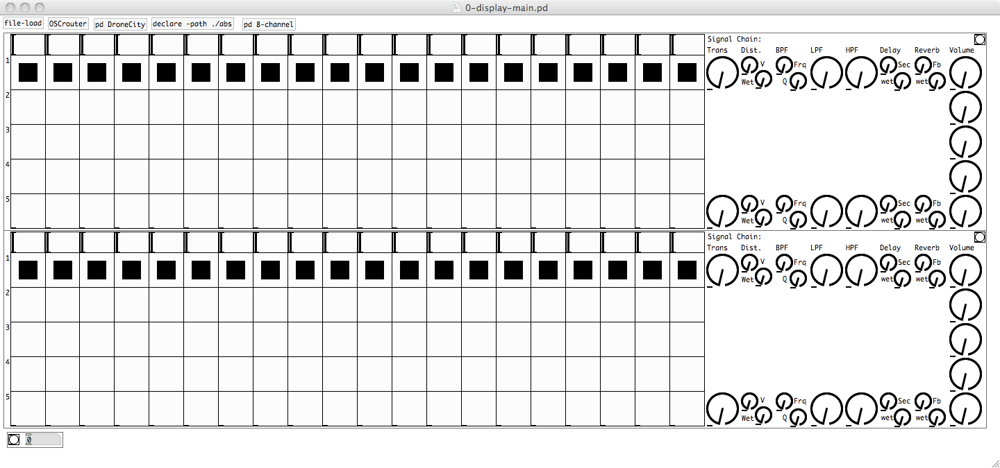Top end of patch
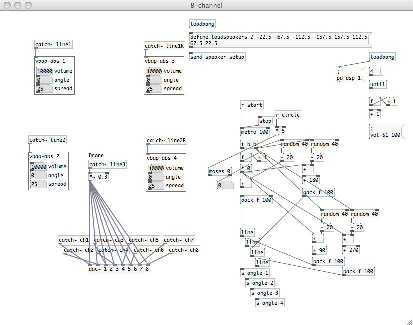8-channel surround sound routing
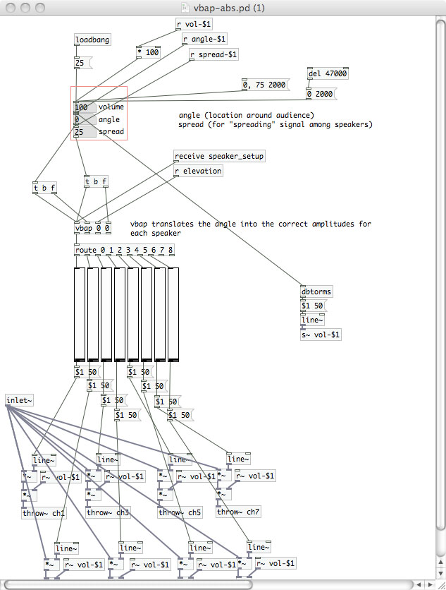VBAP for 8-channel surround sound
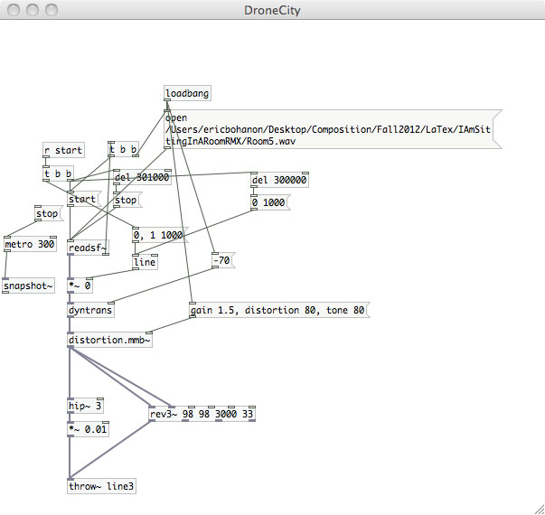Drone patch
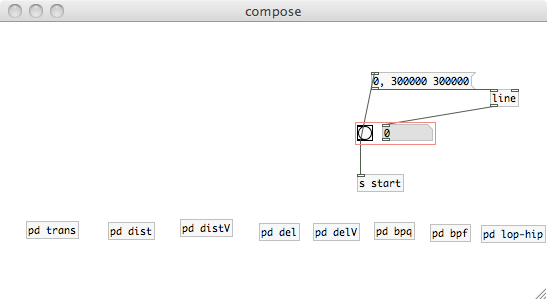Composition control patch
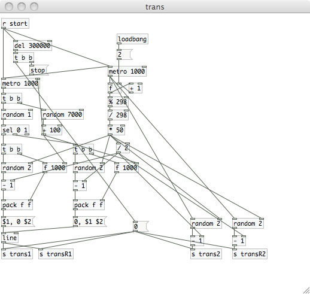Example of parameter change patch inside of composition
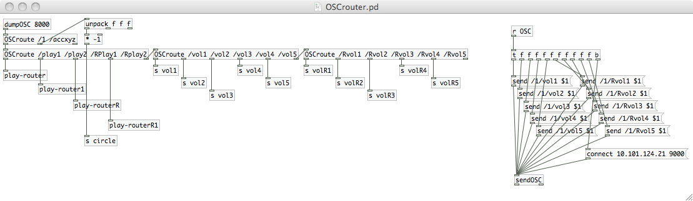OSC information routing
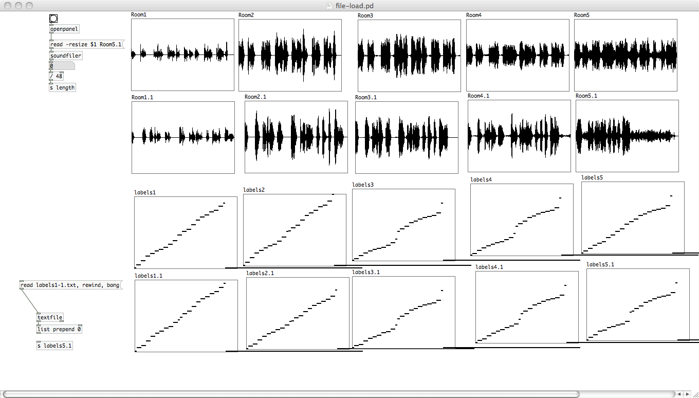Container for sound files to read from
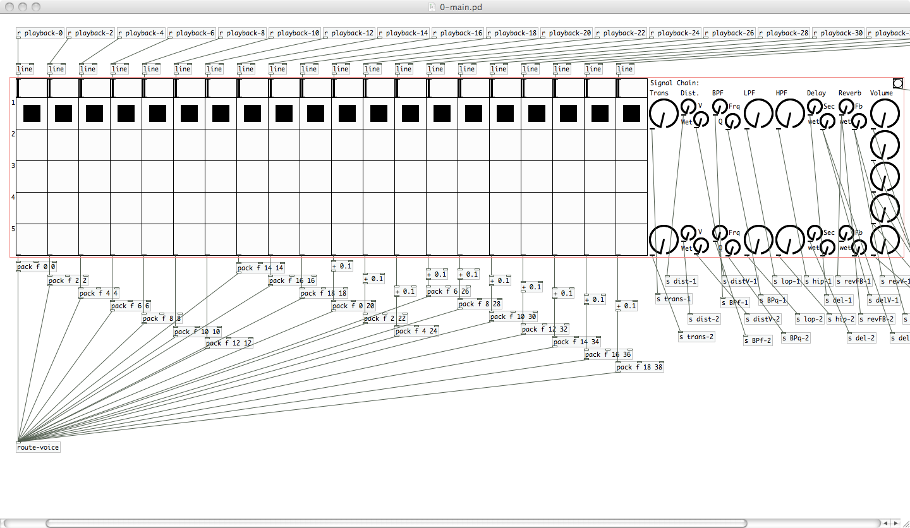Inside main patch
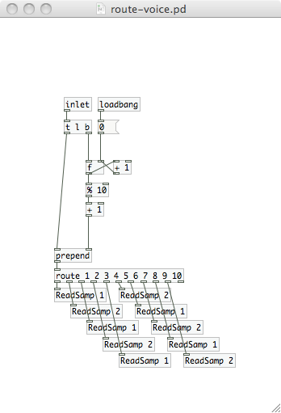Routing to different voices/effect chains
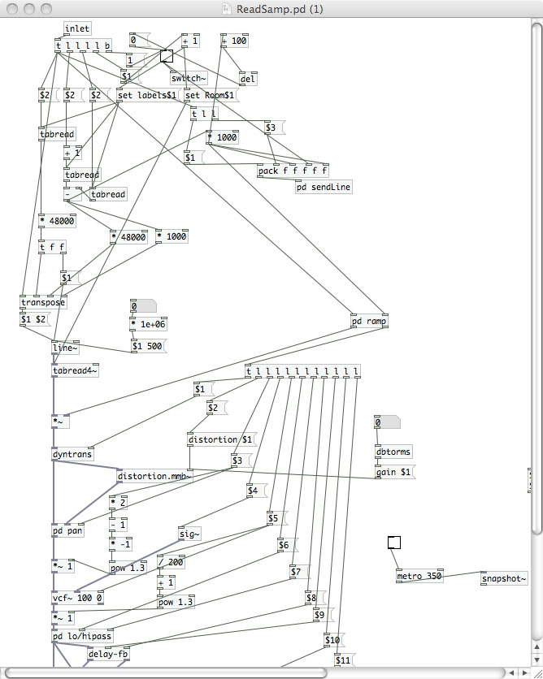Top half of voice
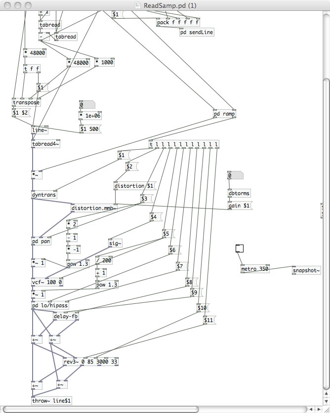Bottom half of voice